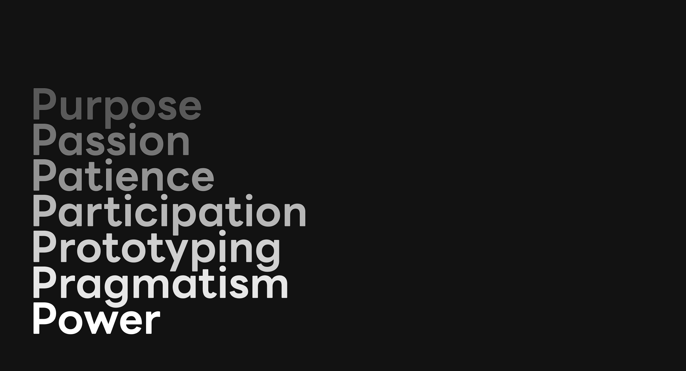

地图必然删减
每一种可视化都在决定哪些经历被留下、哪些差异被合并。清晰是必要的，但清晰不应伪装成完整。

A CRITICAL NOTE ON SERVICE DESIGN TOOLS
服务设计工具可以帮助团队看见复杂，却也可能把复杂压缩成一张过于整齐、过于确定的图。
用户旅程、人物画像和利益相关者地图都不是现实本身。它们是研究者基于有限材料做出的选择、删减与解释。如果不说明证据来源，推测就很容易被误读为用户事实；如果不讨论权力，所有角色又会在图中显得同样有能力发声和行动。
因此，我不把工具视为答案，而把它们视为一种暂时的工作语言：帮助团队提出问题、暴露未知，并决定下一步应该验证什么。
每一种可视化都在决定哪些经历被留下、哪些差异被合并。清晰是必要的，但清晰不应伪装成完整。
“用户感到焦虑”和“研究者推测此处可能产生不确定感”不是同一句话。后者保留了证据边界。
被访谈、参加工作坊或提供反馈，并不代表参与者拥有定义问题、分配资源或否决方案的权力。
统一的阶段容易掩盖绕行、中断、反复进入和不同能力条件下的路径。与其追求一条漂亮的标准流程，我更关心谁无法沿着这条路线前进，以及为什么。
追问：谁的旅程被画出来，谁被平均掉了？笑脸、哭脸与高低曲线常混合用户回忆、行为观察和研究者判断。它适合表达假设，不适合假装精确地读取用户内心。
替代：记录确定感、认知负担、掌控感与继续参与意愿。年龄、职业和一句性格描述很容易制造一个看似具体、实际空泛的人。画像只有在能够解释行为差异并与研究证据相连时才有价值。
追问：哪些变量真正改变了用户的行为与选择？利益相关者并非只是围绕用户排列的圆点。有人掌握预算、许可和数据，有人承担一线劳动与风险；共创也可能只是在既定问题中征求意见。
追问：谁能定义问题、作出决定、获得收益并承担后果？来自现场行为、事件记录或可核查材料。
参与者表达的经历、感受与解释，保留其语境与时间。
研究者对材料的综合解释，应说明推断过程与替代解释。
尚无足够依据，但值得通过后续研究或原型测试检验。
我希望每一张图不仅展示“我们知道什么”，也能诚实地展示“我们如何知道”以及“仍然不知道什么”。
目的——先确认我们为什么介入、为谁创造价值，以及谁定义了问题。
热忱——保持好奇和投入，但不让个人偏好替代证据。
耐心——容纳模糊、矛盾与尚未形成答案的材料。
参与——与人共同理解和设计，同时追问参与者拥有多少决定权。
原型——把假设变成可以被体验、质疑和推翻的东西。
务实——面对组织能力、资源、法规与日常运营的真实限制。
权力与推动力——看见谁能决定，也寻找让改变真正发生的集体力量。